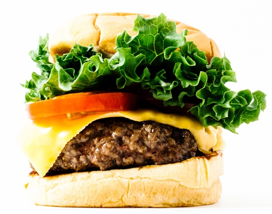

INGREDIENTS
1 lb mix of ground chuck and sirloin
2 tablespoons room temperature butter
4 Martins Sandwich Rolls
4 tablespoons Shack Sauce
4 leaves of green-leaf lettuce, soft parts only
8 slices plum tomato
1/2 teaspoon vegetable oil
Kosher salt and fresh-ground black pepper
4 slices American cheese
INSTRUCTIONS
Form the meat into 4 equal patties about 2 inches tall and 2.5 inches wide.
Season both sides with salt and pepper.
Butter and toast your buns, being careful not to break the buns apart.
Spread Shack Sauce on top bun and place 1 leaf of lettuce and 2 slices of tomato on the top bun.
Heat up a heavy cast iron skillet over medium high heat and swirl around the oil.
Add the patties and press down, using a flat spatula.
Cook until a crust has formed, about 2 minutes.
Scrape and flip, topping each patty with American cheese.
Cook until the cheese is melted, about 1 minute.
Move patties to buns and enjoy immediately.
FEEL FREE TO CONTACT ME!